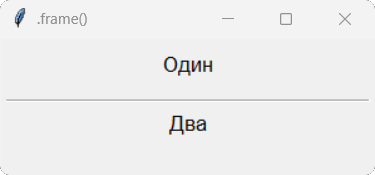
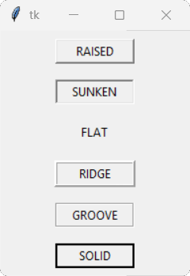
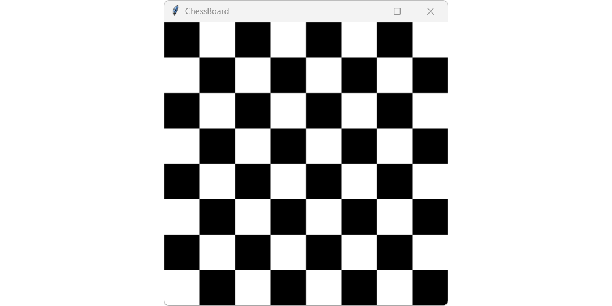

Віджет Frame – клас фрейму (рамки). Він є контейнером для інших віджетів, що дозволяє групувати їх разом. Фрейм не має власного візуального представлення, але може мати фон, межі та інші властивості, які допомагають візуально відокремити його від інших частин інтерфейсу. Фрейми часто використовуються для створення складних макетів, де потрібно розділити вікно на кілька секцій або групувати віджети за певною логікою.
Загальний синтаксис:
name = Frame(window)
де, name – ім'я фрейму, а window – ім'я вікна, на якому він розташовується
Властивості Frame:
| Властивість | Значення |
|---|---|
| width | Ширина фрейму в пікселях. Якщо не вказано, фрейм буде розтягуватися по ширині, щоб помістити всі свої віджети. |
| height | Висота фрейму в пікселях. Якщо не вказано, фрейм буде розтягуватися по висоті, щоб помістити всі свої віджети. |
| background (bg) | Колір фону фрейму. Може бути заданий як назва кольору (наприклад, "red", "blue", "green") або як шестнадцятковий код (наприклад, "#FF0000" для червоного). |
| borderwidth (bd) | Ширина рамки фрейму в пікселях. За замовчуванням 0, що означає відсутність рамки. |
| relief | Стиль рамки фрейму. Може бути "flat", "raised", "sunken", "groove", "ridge". |
| padx / pady | Відступи всередині фрейму по горизонталі (padx) та вертикалі (pady) в пікселях. Вони створюють внутрішній простір між краями фрейму та його вмістом. |
| ipadx / ipady | Відступи всередині фрейму по горизонталі (ipadx) та вертикалі (ipady) в пікселях. Вони створюють внутрішній простір між краями віджетів, розташованих всередині фрейму, та їх вмістом. |
| state | Стан фрейму. Може бути "normal", "disabled". |
| highlightbackground | Колір фону фрейму при наведенні на нього. Може бути заданий як назва кольору або як шестнадцятковий код. |
| highlightcolor | Колір рамки фрейму при наведенні на нього. Може бути заданий як назва кольору або как шестнадцятковий код. |
| highlightthickness | Ширина рамки фрейму при наведенні на нього в пікселях. За замовчуванням 0, що означает отсутствие рамки. |
| takefocus | Вказує, чи може фрейм отримувати фокус клавіатури. Може бути True або False. |
| cursor | Вказує тип курсора, який буде відображатися при наведенні на фрейм. Може бути "arrow", "hand2", "cross", "circle" та інші. |
1. Розмістимо у вікні дві мітки з написами "Один" і "Два", та фрейм для розділення міток.
from tkinter import *
root = Tk()
root.title(".frame()")
root.geometry('300x120')
lab1 = Label(root, height=2, text="Один", font="Arial 13").pack()
separator = Frame(root, height=2, bd=1, relief=SUNKEN).pack(fill=X, padx=5, pady=5)
lab2 = Label(root, text="Два", font="Arial 13").pack()
root.mainloop()

2. Створимо мітки, які описують усі можливі стилів фреймів та застосуємо ці стилі до відповідних міток.
from tkinter import *
root = Tk()
mainFrame = Frame(root).pack()
f1 = Frame(mainFrame, borderwidth=2, relief=RAISED)
Label(f1, text='RAISED', width=10).pack(side=LEFT)
f1.pack(pady=8)
f2 = Frame(mainFrame, borderwidth=2, relief=SUNKEN)
Label(f2, text='SUNKEN', width=10).pack(side=LEFT)
f2.pack(pady=8)
f3 = Frame(mainFrame, borderwidth=2, relief=FLAT)
Label(f3, text='FLAT', width=10).pack(side=LEFT)
f3.pack(pady=8)
f4 = Frame(mainFrame, borderwidth=3, relief=RIDGE)
Label(f4, text='RIDGE', width=10).pack(side=LEFT)
f4.pack(pady=8)
f5 = Frame(mainFrame, borderwidth=2, relief=GROOVE)
Label(f5, text='GROOVE', width=10).pack(side=LEFT)
f5.pack(pady=8)
f6 = Frame(mainFrame, borderwidth=2, relief=SOLID)
Label(f6, text='SOLID', width=10).pack(side=LEFT)
f6.pack(pady=8)
root.mainloop()

Створіть з віджетів Frame шахову дошку за зразком поданим нижче.
Зразок:
